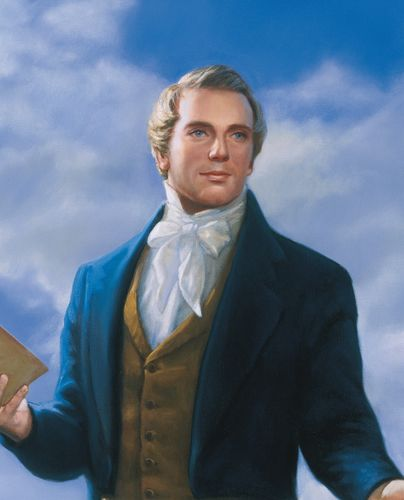

Brief Summary
The Church of Jesus Christ of Latter-Day Saints first and foremost focuses on their belief in Jesus Christ. Their more unique beliefs stem from their history. Firstly they believe in modern day Prophets, something most Christians do not believe. Secondly, because of this, they believe in scripture beyond just the bible, namely the Book of Mormon and another book of modern day revelation called the Doctrine and Covenants.
About The Church
The Church loosely began when a young man named Joseph Smith prayed to know which church was true. From that he received a vision of God and Jesus Christ. They told him that no church was true and would eventually restore it through him. After receiving visits from angels and divine guidance in translating a new book of scripture about the inhabitants of ancient America now called the Book of Mormon; he would go on to formally organize the Church of Jesus Christ of Latter-Day Saints on April 6, 1830. After his martyrdom, the Church would eventually go on to colonize the state of Utah and become a globe spanning church.
